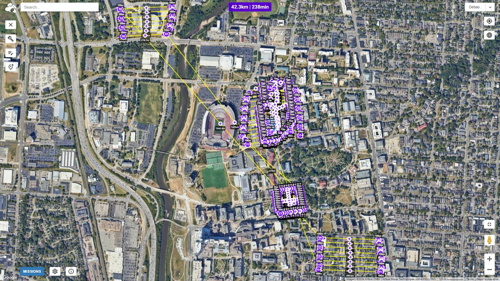

I'm a PhD candidate in the Geospatial Data Analytics Group at The Ohio State University.
I started in January 2021, supervised by Prof. Rongjun Qin. My research focuses on 3D reconstruction and uncertainty quantification. I am working on projects funded by ONR, IARPA, AFRL, and NSF to solve complex 3D geometry problems.
Keywords: Photogrammetry, Computer Vision, Remote Sensing, Machine Learning, AI, Structure-from-Motion (SfM), 3D Gaussian Splatting (3DGS), Uncertainty Modeling.
This work presents a method for reconstructing dynamic urban scenes from UAV full-motion videos using 3D Gaussian Splatting, effectively handling moving objects in large-scale environments.
This paper focuses on estimating the uncertainty of point clouds derived from UAV imagery to improve the reliability of photogrammetric reconstructions.
This paper derives novel geometric constraints in BA of SfM pipeline that assumes minimal knowns about the uncalibrated multi-camera systems at the ground level. Our proposed constraints are effective in correcting topographical errors (i.e., trajectory drifts) of the reconstruction.
This paper provides multi-camera tiling (MCT) strategy to scale the NeRF on large-scale aerial datasets and a thorough geometry assessment of NeRF.
This paper presents preliminary study of metrics in the dense matching and MVS fusion process to learn heuristic correlation for propagating errors to the final point clouds.
Proposed a bundle adjustment (BA) solution for uncalibrated cameras with overlapping views by incorporating a so-called baseline constraint which builds the link between two cameras that are static to each other.
Comprehensively evaluates the 3D potential of PlanetScope images by performing accuracy analysis for both 3D reconstruction and change detection.
Presents an unmanned aerial vehicle (UAV) based fine-scale 3D change detection and monitoring of progressive collapse performance of a building during a demolition event.
Full 3D reconstruction pipeline from SfM, MVS, meshing to texturing.
Estimating and encoding error covariance of 3D points, visualization in desktop GUI and VR.
Dynamic 3D Gaussian Splatting from UAV full motion videos.
I serve as a peer reviewer for:
I am a Federal Aviation Administration (FAA) certificated remote pilot, allowing me to collect UAV data for research and commercial purposes in the US.
